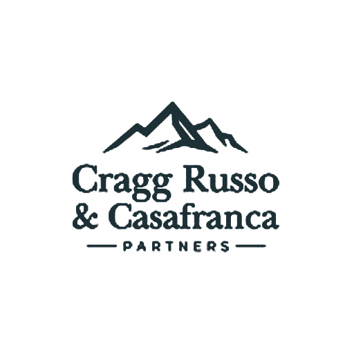

Enfoque estratégico
Traducimos los requisitos normativos en acciones prácticas que la empresa pueda ejecutar y sostener.

WhatsAppConsultoría ISO para empresas peruanas
Acompañamos a organizaciones públicas y privadas en la implementación, auditoría y mejora continua de normas ISO, con enfoque práctico, ordenado y orientado a resultados.
Consultor en Sistemas Integrados de Gestión
Consultor Comercial y Desarrollo de Negocios
CRC Partners ayuda a las empresas a preparar, implementar y fortalecer sus sistemas de gestión para responder mejor a auditorías, clientes, reguladores y objetivos internos de crecimiento.
Traducimos los requisitos normativos en acciones prácticas que la empresa pueda ejecutar y sostener.
Ordenamos procesos, responsabilidades, evidencias y controles para fortalecer la gestión interna.
Trabajamos junto al equipo del cliente para que el sistema sea entendido, usado y mejorado.
Calidad
Ambiental
Seguridad y Salud en el Trabajo
Seguridad de la Información
Antisoborno
Continuidad de Negocio
Consultor en Sistemas Integrados de Gestión, con experiencia en implementación, auditoría y mejora continua de normas ISO.
Consultor Comercial y Desarrollo de Negocios, enfocado en soluciones corporativas, acompañamiento ejecutivo y generación de oportunidades de mejora.
Conversemos sobre los objetivos de su organización y el mejor camino para implementar o fortalecer su sistema de gestión.
981 760 638
e.casafranca@crcpars.com
Lima, Perú
Atención en todo el Perú
Contactar por WhatsApp Enviar correo